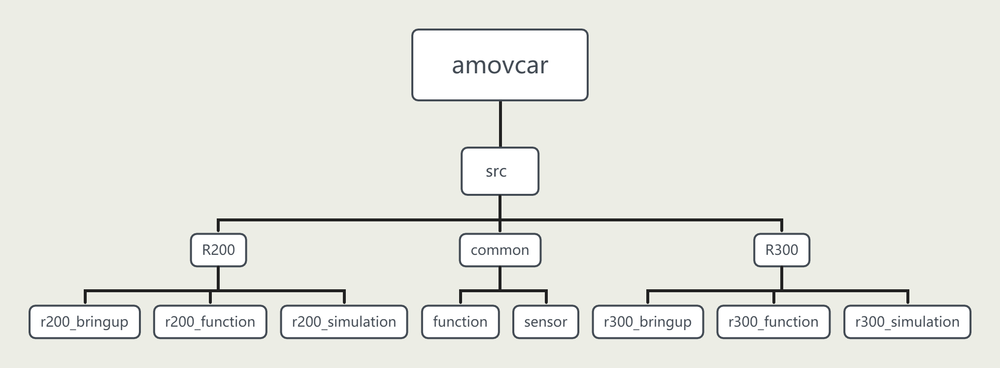

快速上手指引
注解
以下内容在用户拿到R300的时候已经完成配置和测试，保证功能正常。 如果非必要，请勿修改！
以下内容可以作为您二次开发的一个例子
板载计算机设置
设置固定IP
将无线/有线键鼠插入R300侧边的USB扩展口，然后打开R300电源
输入密码 amov 登录到系统
打开桌面右上角 WIFI图标，点击 Wired Connected，找到 Wired Settings，点击菜单栏上的 IPV4 ,选择 Manual ，输入IP 192.168.1.14 ，子网掩码 255.255.255.0 如下图所示：

设置相机序列号
在桌面打开终端
输入命令
rs-sensor-control，该命令将会返回 D435i 和 T265的序列号接着打开目录：
amovcar/src/common/sensor/amovcar_sensor/launch，将会看到以对应传感器命名的launch文件分别打开D435i / T265 的launch文件，把文件中的参数
defalut的值替换成第2步获取到的相机序列号即可。
Homer配置
将基站端Homer用3S电池供电，再将专有网口线的一端接入基站端Homer的LAN1或LAN2口，另一端接入到PC的网口。（如果您的PC没有网口，则需要一个USB转网口模块）
警告
Homer需要用专门的电源线（电源线贴有 电源线 12V 字样的标签,如下图所示：
Homer的供电电压为12V
注解
LAN1或LAN2口为百兆网口。百兆网线如下：
在PC上(Windows系统)打开 控制面板—查看网络状态和任务—更改适配器设置—右键以太网—属性—Internet协议版本4—属性，设置为如下图所示：
将移动端Homer和基站端Homer同时通电。基站端Homer用3S电池供电，移动端Homer用小车电源供电。(或者也可以将移动端Homer拆下来，再单独用3S电池供电)
基站端Homer配置
首先将基站端Homer的工作模式，拨到 AP端口，如下图所示：
打开浏览器，输入网址 192.168.1.100 进入配置界面
用户名和密码均为 admin
找到 config — Networking，选择界面中的 Static IP 修改为如下图所示：
找到 config — Wireless，找到界面中的 ESSID，修改为 AMOV-002；找到界面中的 Passphrase，将密码修改为 12345678。图下图所示：
保存
移动端Homer配置
首先将移动端Homer的工作模式，拨到 STA端口，如下图所示：
打开浏览器，输入网址 192.168.1.10 进入配置界面
用户名和密码均为 admin
找到 config — Networking，选择界面中的 Static IP 修改为如下图所示：
到 config — Wireless，找到界面中的 ESSID 旁边的 Scan AP，此时将会搜索到基站端Homer配置的WIFI名称 AMOV-002，然后输入密码 12345678 点击连接，如下图所示：
保存
注解
确保在配置过程中，两个Homer都通电。
当两个Homer正面的绿色指示灯常亮，表示二者正确配置并且互相连接成功。
基站端(AP模式下)的WIFI名称和密码可以根据实际情况自定义
移动端(STA模式下)，在连接上基站端的WIFI以后，一定要 点击保存，否则下一次启动将不会自动连接
打开Homer配置软件（ 点击下载 配置软件）
根据实际情况选择网卡设备。然后刷新设备，可以看到当前网络设备。
选择102，按照下图设置
选择12，按照下图设置
选择11，按照下图设置
警告
在配置RTK时，所有的 RTK天线禁止热插拔，即 必须先断电，后插拔RTK天线。
移动端RTK配置
采用默认驱动，无需配置
基站端RTK配置
将基站端RTK用USB数据线连接至PC
通电（对于移动端RTK，可以使用R300电源供电，也可以拆下后单独用3S电源供电）
警告
RTK供电线和Homer供电线不兼容，不能混用。必须使用专门的电源线。如下所示：

RTK的供电电压为12V
在PC上打开浏览器，输入 192.168.42.129 进入配置界面
输入用户名 admin， 密码 password 登录到配置界面
在页面左边找到 系统配置—网页命令 在对话框中输入命令
posave auto，点击提交然后输入
saveconfig，点击提交在页面左边找到 I / O配置—端口摘要 ，点击 COM2，即可进入COM2的配置界面
在 输出 栏下面找到 RTCM，将其改为 启用 ，点击确定即可
移动端RTK（4G）配置
将移动端RTK天线接入到移动端RTK的ANT1口，将小天线(又称小辣椒)接入到移动端RTK的4G接口，并插入4G卡。
通电（对于移动端RTK，可以使用R300电源供电，也可以拆下后单独用3S电源供电）
警告
RTK供电线和Homer供电线不兼容，不能混用。必须使用专门的电源线。如下所示：
-
RTK的供电电压为12V
用USB数据线，一端接在移动端RTK的USB口，一端接在PC上
在PC上打开浏览器，输入 192.168.42.129 进入配置界面
输入用户名 admin， 密码 password 登录到配置界面
在该页面，您可以看到当前RTK的工作状态，包括卫星观测值质量、跟踪卫星数量、以及定位方式等
在页面左边的菜单栏找到 I/O配置，点击COM4口，进入如下图所示的配置
注解
R300产品不提供千寻、六分账号，如果您有这方面的需求，点击 阿木实验室淘宝店铺 ，获取更多信息
R300软件框架
amovcar文件结构图如下：
amovcar
amovcar文件夹为ROS下的工作空间文件夹，包含无人车几乎所有的源代码文件，无人车功能包均放置在src文件夹下。
common
common文件夹内含有R200以及R300两款无人车通用的一些功能包，包含一些功能模块以及二维激光雷达、三维激光雷达、相机等传感器驱动ROS功能包。
R200
R200文件夹内含有 r200_bringup、 r200_function、 r200_simulation 三个功能包。
r200_bringup为R200小车底盘的驱动功能包，R200下位机控制板为飞控，通过mavros连接飞控与板载计算机，r200_bringup在mavros上做了一层封装。
r200_function文件内含有R200无人车所有功能的源代码，包含自启动服务、配置文件、launch文件、sh脚本文件以及源代码等内容。
r200_simulation文件内含有R200无人车仿真的源代码，包含模型、gazebo环境、launch文件、配置文件等内容。
R300
R300文件夹内含有 r300_bringup、 r300_function、 r300_simulation 三个功能包。
r300_bringup为R300小车底盘的驱动功能包。
r300_function文件内含有R300无人车所有功能的源代码，包含自启动服务、配置文件、launch文件、sh脚本文件以及源代码等内容。
r300_simulation文件内含有R300无人车仿真的源代码，包含模型、gazebo环境、launch文件、配置文件等内容。